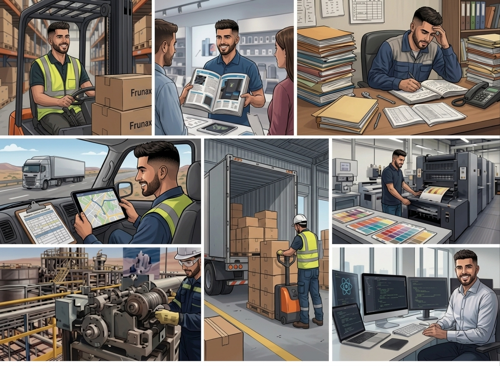

{ } </> { }Sobre mí
Hola, soy Ignacio.
Mi camino no comenzó frente a un editor de código. Trabajé en logística, bodegas, ventas, despachos e imprentas, donde aprendí a escuchar a los clientes, coordinar tareas, controlar información y resolver problemas bajo presión.
Al convivir con planillas dispersas, registros manuales y tareas repetitivas, entendí que muchos problemas cotidianos no se resuelven trabajando más horas, sino diseñando mejores procesos y herramientas que sean fáciles de usar.
Hoy combino esa experiencia operativa y comercial con el desarrollo web. Creo sitios, agendas y sistemas entendiendo primero cómo funciona el negocio, qué necesita el usuario y dónde se pierde tiempo. Mi objetivo es construir soluciones digitales claras, útiles y preparadas para evolucionar.
Capacidades de ISM Developer
Servicios y Plataformas Digitales
Selecciona el servicio que necesitas y comienza una configuración guiada según los objetivos de tu negocio.
Cada tarjeta abrirá el configurador correspondiente y conservará el servicio seleccionado.
Una ruta transversal para avanzar con criterio
Niveles de madurez transversales
Primeros Pasos Digitales
Presencia y habilitación inicial.
Optimización Digital
Integración, automatización y control.
Consolidación Digital
Escalabilidad, seguridad y continuidad.
Evolución Digital
Innovación y mejora continua.
Estos niveles de madurez aplican transversalmente a todos los servicios y plataformas.
Plan de Acción
Conversamos
Entiendo tu negocio, necesidades y objetivos principales.
Arquitectura
Definimos estructura, alcance, tecnología y plan de trabajo.
Diseño Web
Ordenamos la experiencia visual y el flujo que verá el usuario.
Desarrollo
Construyo el sitio o sistema con estructura clara y responsive.
Entrega
Revisamos juntos, aplicamos ajustes y dejamos todo listo.
Post Venta
Acompañamiento posterior para mejoras, soporte y evolución.
Mi Stack
Estas son las tecnologías y herramientas que utilizo para desarrollar soluciones modernas, escalables y de alto rendimiento.Producto ISM Herramienta desarrollada por ISM Developer
Una primera evaluación clara, guiada y transparente.
Configurador de servicios ISM
Convierte una necesidad en un alcance ordenado antes de solicitar una cotización formal.
La herramienta está pensada para empresas, emprendimientos y procesos que necesitan dimensionar una solución digital. El resultado es referencial y sirve como base para revisar el alcance junto a ISM Developer.
Portafolio ISM
Soluciones construidas para problemas reales.
Casos, herramientas y pilotos desarrollados para ordenar procesos, mejorar la atención y convertir necesidades reales en soluciones digitales aplicables a otros negocios.
Antes de comenzar
Alcance y entrega
El alcance acordado incluye una ronda consolidada de revisión de textos, imágenes y detalles visuales antes de publicar. Las correcciones de errores respecto del alcance aprobado no consumen esa ronda. Nuevas secciones, funciones o cambios de dirección se cotizan por separado.
Al completar el pago, el cliente recibe el código correspondiente a su proyecto y los accesos acordados. El dominio, hosting y cuentas de terceros se configuran preferentemente a nombre del cliente. Las licencias externas mantienen las condiciones de sus respectivos proveedores.
Los sitios incluyen una base técnica inicial: títulos y descripciones, estructura semántica, adaptación móvil, indexabilidad y configuración esencial. No incluye campañas, generación periódica de contenido, construcción de enlaces ni garantías de posición en buscadores.
El pago se realiza mediante transferencia bancaria. Los hitos, porcentajes y fechas quedan escritos en la cotización antes de comenzar, y no se ejecutan trabajos fuera del alcance sin aprobación previa.
Publicación y continuidad
Se comprueba el funcionamiento del alcance entregado, se coordinan los accesos y se atienden durante 7 días corridos los errores atribuibles a la implementación. Nuevas solicitudes o cambios posteriores pasan a mantenimiento o a una nueva cotización.
No se incluye de forma indefinida con el desarrollo. Puede contratarse un plan con solicitudes, horas, horario, tiempos de respuesta, respaldos y exclusiones definidos. El detalle está disponible en Mantenimiento y Evolución.
El cliente entrega textos, logo e imágenes finales y confirma que cuenta con autorización para utilizarlos. La redacción, búsqueda de imágenes o producción audiovisual puede incorporarse mediante una cotización independiente.
No, salvo que la cotización lo indique expresamente. Estos servicios se contratan por separado y sus costos dependen del proveedor. Siempre que sea posible, quedan registrados a nombre del cliente.
Evalúa tu proyecto con ISM Developer
Cuéntanos qué quieres construir, mejorar o automatizar. ISM Developer revisará el contexto para orientarte hacia una solución coherente con la etapa, las prioridades y los objetivos de tu negocio.